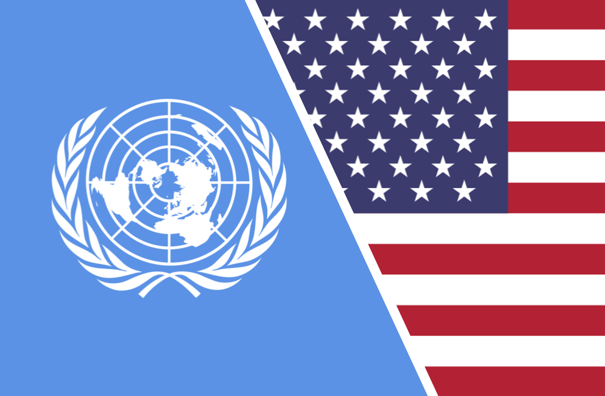

The Resilience of the International Human Rights Regime Despite United States Attacks
Implementing Human Rights
April 4th, 2025
Written by Emma Leigh

Joseph Parrott/OSEClick to Read Article
The Resilience of the International Human Rights Regime Despite United States Attacks
The International Human Rights Regime (IHRR) comprises international norms and laws
covering various issues, promoting individuals with civil, political, and security rights and
protections (Harrelson-Stephens and Callaway, 2009, p. 437). The IHRR emerged after the
atrocities of the Second World War in the wake of the Holocaust (Føllesdal et al., 2013, p. 1).
International support for the IHRR grew immensely in the 1970s. Every state had ratified at least
one UN core international human rights treaty, and eighty percent of states had ratified four or
more by the late 1970s (Føllesdal et al., p. 1). The United States initially supported human rights,
openly supporting the UN Charter and the UN Universal Declaration of Human Rights (UDHR)
(Harrelson-Stephens and Callaway, p. 431). However, support for the IHRR did not last long, as
the United States fell from openly supporting the regime to overtly attacking it. The first
instances of the shift in US support for the IHRR occurred during the Cold War and later turned
attacks after the September 11, 2001 attacks that occurred in the United States.
Despite the attacks from the US hegemon, the IHRR remained well supported. Since the
hegemon did not support such rights, how did the support in the rest of the world remain
relatively strong? This paper will explore the question, “Despite recurrent attacks by the United
States throughout the 21 st century, the international human rights regime has proven stronger than
expected.” This research question will provide the basis for this research paper by exploring (1)
the influence the United States has had on the international human rights regime, (2) United
States challenges to the international human rights regime, and (3) factors contributing to the
resilience of the international human rights regime to the findings. The IHRR has demonstrated
resilience despite hegemonic attacks, mainly due to its institutional adaptability, the active
engagement of both state and non-state actors, and the deep entrenchment of the human rights
norms in global governance. The reader will see that these factors have enabled the regime to
withstand political pressures and maintain legitimacy while shaping state behaviour despite
resistance from powerful actors.
The International Human Rights Regime and the United States Influence
The IHRR comprises the UN UDHR, which outlines the human rights rules and decision-
making procedures. The UDHR is not legally binding as it was a resolution, but several notable
declarations and conventions are legally binding to the states that have ratified them (Harrelson-
Stephens and Callaway, 2009, p. 437). The conventions include the Convention on the Prevention
and Punishment of the Crime of Genocide (1951), the Convention on the Prevention on the
Elimination of All Forms of Racial Discrimination (1969), the International Covenant on Civil
and Political Rights (1976), the International Covenant on Economic, Social, and Cultural Rights
(1976), the Convention on the Elimination of All Forms of Discrimination Against Women
(1981), the Convention against Torture and Other Cruel, Inhuman or Degrading Treatment or
Punishment (1984), and the Convention on the Rights of a Child (1989) among others (Ritter,
2023, p. 222-226).
Harrelson-Stephens and Callaway (2009) identify three phases of US engagement with
the IHRR: Phase 1: Hegemonic Support Following WWII, Phase 2: Passive Support during the
Cold War, and Phase 3: Hegemonic Assault post-9/11 attack (p. 439-445). These three phases
will identify the US influence on the IHRR and determine how the regime has remained strongly
supported.
Phase 1: Hegemonic Support
Post WWII, the United States played a significant role in establishing human rights
standards. According to Harrelson-Stephens and Callaway (2009), the United States quickly
assumed the role of hegemon before WWII was over (p. 439). The United States established
within the IHRR a post-war vision that reflected individual liberty and freedom in the economic
and political realm (Harrelson-Stephens and Callaway, p. 439). The United States strongly
supported this emerging idea of individual rights. The United States even led the Nuremberg
Tribunal to punish the perpetrators of the Holocaust as well as pushing for an international
organization that would provide peace and security (Alipour, 2023, p. 273; Harrelson-Stephens
and Callaway, p. 439). The devastation of WWII led to the most significant efforts to promote
human rights internationally. According to Harrelson-Stephens and Callaway, “Western reaction
to fascism and militarism in the 1930s and 1940s led to human rights norms being written into
the UN Charter, the widespread knowledge of the Holocaust gave the human rights movement a
further push” (p. 440). The development of the IHRR is fundamentally shaped by Western
responses, which emphasize the promotion of Western values in making the IHRR.
The motivation for US participation in the developing ideology of the IHRR was to
prevent such events from reoccurring (Forsythe, 2002, p. 506). Within this time of development,
Harrelson-Stephens and Callaway argue that “in terms of US hegemony, a certain amount of
consensus about the importance of human rights, with an emphasis on security rights, existed
among the greatest powers during the regime's early development” (p. 440). The primary values
of the United States have rested on security rights such as individual freedom, liberty, and the
right to life, which, given their hegemonic influence, have been the foundation of the IHRR.
2: Passive Support
During the Cold War, United States support for the IHRR became more passive. The
United States' support for security rights continued, but the US foreign policy repressed these
values when they were fighting the communism of the Soviet Union (Forsythe, 2002, p. 506). As
the Cold War intensified, the United States refused to ratify most international covenants and
laws that would follow the UDHR (Harrelson-Stephens and Callaway, 2009, p. 441). According to
Mueller (2023), President Ronald Reagan sought to rebuild the US support for an assertive
global presence after the Vietnam War had fractured the Cold War consensus (p. 353). To achieve
this goal, Reagan adopted a “dual containment strategy,” which meant he would contain liberal
internationalists at home by neutralizing domestic critics who supported a more human rights-
centered and diplomatic approach to foreign policy and contain the spread of communism abroad
(Schmidli, 2022, p. 14). Reagan did not embrace human rights for moral reasons; instead, “he
recognized its usefulness as a tool to roll back communism and encourage the spread of
neoliberal economics and democracy” (Mueller, p. 352-354). This meant using human rights
discourse to justify interventions, promote neoliberal policies, and oppose leftist movements.
Essentially, Regan rebranded human rights to serve the Cold War objective by supporting
regimes that aligned with the US interests while criticizing leftist and socialist governments
under the guise of defending democracy and individual rights. According to Harrelson-Stephens
and Callaway (2009), the United States largely ignored human rights between the 1950s and
early 1970s, prioritizing Cold War geopolitics and strategic alliances. Human rights began
influencing US foreign policy after the Vietnam War and growing congressional pressure.
3: Hegemonic Assault
After the September 9, 2001, attacks, the United States went from passively supporting
the IHRR to intentionally attacking it. More specifically, according to Harrelson-Stephens and
Callaway (2009), they started to attack security rights, the area of rights the United States had the
most substantial support (p. 443). In the name of national security, the United States justified its
acts of torture.
The first signs of the United States going against its long-held commitment to security
rights was it rejecting the Geneva Convention, as well as the Convention against Torture,
concerning the prisoners held at Guantanamo Bay (Harrelson-Stephens and Callaway, 2009, p.
443). According to Harrelson-Stephens and Callaway, “the move to hold detainees at
Guantanamo by the Bush Administration was an attempt specifically designed to create an
arbitrary distinction that would allow them to argue that neither national law nor international
law applied” meaning that the need to fight the war on terror necessitates abandoning the
prohibition against torture (p. 443).
The prisoners held at Guantanamo Bay were subjected to torture despite the United States
ratifying the Convention Against Torture in 1994. The first indication that the United States was
illegally torturing individuals was the torture of the Abu Ghraib prisoners led by the Bush
Administration (Harrelson-Stephens and Callaway, 2009, p. 443). This widespread use of torture
in facilities has reached a surmountable prevalence. Harrelson-Stephens and Callaway note that
the United States acknowledged its actions were illegal and subsequently rebranded the term
torture to “stress and duress techniques” to legally get away with governmental and institutional
torturing techniques used (p. 443). This term is an example of the lengths the US government
would go to ensure the cruel behaviours remained in their institutions.
The term stress and duress permitted the United States to apply strategies such as
interrogating individuals while nude, employing sleep and sensory deprivation, forcing prisoners
to remain in awkward and uncomfortable positions for extended periods, or making them kneel
or stand for hours, subjecting them to prolonged blackout situations by spray-painting goggles
black or forcing them to stand with hoods over their heads (Fenwick, 2010, p. 170-172;
Harrelson-Stephens and Callaway, p. 443). The language used to redefine torture suggests that the
“government created, at best, an environment ambiguous to and, at worst, an environment
conducive to the use of torture” (p. 443). The US government justified its actions of the
widespread use of torture as a necessity given the war on terror and that the injustices done to the
state had to be dealt with in this manner. The torture of prisoners at Guantanamo Bay and Abu
Ghraib exposed grave human rights violations perpetrated by the United States. These events
highlighted how the United States continuously justified its actions while redefining the term
"torture" to evade accountability. By changing these technicalities, they managed to absolve
themselves of responsibility for their actions.
Beyond the use of prison facilities to torture individuals, there was also widespread use of
black sites where they were off-site, off-the-record detention facilities where torture was
outsourced to another state (Harrelson-Stephens and Callaway, 2009, p. 443). They would justify
this use by explaining that the United States does not have the cultural affinity to deal with these
individuals properly (Harrelson-Stephens and Callaway, p. 443). However, later sources acquired
that this practice was known to be used to send individuals to another state to be tortured, where
they had more open ways to torture individuals. The public justification that the United States
contributed to counters the long-standing US values.
In 2008, the use of torture in the United States was at an all-time high when the Bush
Administration continued to protect the government's right to torture and vetoed legislation that
would have explicitly prevented the CIA from utilizing waterboarding, sexual humiliation, and
similar techniques (Harrelson-Stephens, 2009, p. 444). After 9/11, the United States had
seemingly seen majority support for their government's use of torture. The longer the war of
terror lasted, the more the United States departed from individual freedom, the rule of law, and
the significant attacks on the IHRR (Harrelson-Stephens and Callaway, p. 445).
US Challenges to the International Rights Regime
In this section, the paper will outline the international human rights treaties the United
States has not ratified, explain the reasons for non-ratification, and analyze the impact of the US
non-ratification on the legitimacy and enforcement of the IHRR.
The United States has not ratified several key international human rights treaties,
including (1) Convention on the Elimination of All Forms of Discrimination (CEDAW), (2)
Convention on the Rights of the Child (CRC), (3) International Covenant on the Economic,
Social and Cultural Rights, (4) Convention on the Rights of Persons with Disabilities (CRPD),
(5) International Convention on the Protection of the Rights of All Migrant Workers and Their
Families (ICMW), (6) Convention for the Protection of All Persons from Enforced
Disappearance (CPED), (7) Optional Protocol to the Convention Against Torture (OPCAT),
although the United States has ratified Convention Against Torture (CAT). There are many
reasons why the United States has not ratified each of these treaties; this next section will
analyze the reasons for non-ratification.
(1) Convention on the Elimination of All Forms of Discrimination (CEDAW)
The United States signed CEDAW in 1980 but has never ratified it. Opposition stems
from Republican concerns that the treaty could conflict with US federal and state laws,
particularly regarding issues such as reproductive rights and gender roles (Kammer and Och, 2024,
p. 444).
(2) Convention on the Rights of the Child (CRC)
The United States is the only UN member state that has not ratified this treaty despite
signing it in 1995 (Lee, 2017, p. 688). Lee adds that “part of the reluctance to ratify is grounded
in an enduring American hostility to international law,” along with arguments that the CRC could
undermine parental rights, interfere with US laws on juvenile justice, and impose obligations that
conflict with American values (p. 689).
(3) International Covenant on the Economic, Social and Cultural Rights (ICESCR)
Although the United States signed ICESCR in 1977, it has never ratified the convention.
According to Hamidi (2020), the ICESCR has remained in the Foreign Affairs committee with
no evidence to suggest the possibility of ratification in the future (p. 1). The claim is that the
United States has yet to ratify the ICESCR because it failed to mobilize a broad political
coalition around the treaty's content (Hamidi, p. 10). The US policymakers have traditionally
opposed recognizing economic, social, and cultural rights as legally enforceable obligations,
viewing them instead as policy goals (Hamidi, p. 9).
(4) Convention on the Rights of Persons with Disabilities (CRPD)
The United States signed CRPD in 2009 but failed to ratify it in 2012, falling short of the
two-thirds Senate vote required (Volonakis, 2016, p. 198). According to Volonakis, the
opposition was driven mainly by concerns that it could interfere with US disability laws such as
the Americans Disabilities Act (ADA) (p. 204).
(5) International Convention on the Protection of the Rights of All Migrant Workers and
Their Families (ICMW)
The United States has neither signed nor ratified the ICMW due to political complexities
surrounding immigration policy (Lyon, 2017, p. 278).
(6) Convention for the Protection of All Persons from Enforced Disappearance (CPED)
The United States has not signed or ratified CPED, which aims to prevent state-enforced
disappearances. Given the History of US counterterrorism operations, including extraordinary
renditions and secret detention sites, ratification could open the United States to legal scrutiny
(Harrelson-Stephens and Callaway, 2009, p. 443; Mertus and Sajjad, 2008, p. 3-8).
(7) Optional Protocol to the Convention Against Torture (OPCAT)
While the United States ratified the Convention Against Torture (CAT) in 1994, the
United States has not ratified OPCAT, which allows for independent monitoring of detention
facilities to prevent torture. The US government has been reluctant to accept international
oversight of its detention centers, given their histories of maltreatment of prisoners in
Guantanamo Bay and CIA black sites (Harrelson-Stephens and Callaway, 2009, p. 443)
The non-ratification of these conventions could be due to the US values. The United
States pushes human rights abroad but “generally does not itself ratify human rights treaties that
deal with socioeconomic and cultural rights” (Kammerer and Och, 2024, p. 444). US public
support for human rights is strong (Tomz and Weeks, 2020, p. 182). The close ties with the elites
and the government in the United States contribute to the censorship in which its citizens cannot
engage in democratic debates, contributing to the governmental control of the mass narratives.
They can hide their violations due to technicalities, which further demotes US democracy.
Factors Contributing to the Resilience of the International Human Rights Regime
Harrelson-Stephens and Callaway (2009) are concerned with the question: Is the human
rights regime likely to persist when faced with a direct hegemonic attack? This next section will
focus on this question to determine how the international human rights regime has proven more
substantial than expected despite recurrent attacks by the United States throughout the 21 st
century. Despite recurrent attacks by the United States, the International Human Rights Regime
(IHRR) has remained resilient due to several factors: (1) Institutional Adaptability, (2) State and
Non-State Actor Involvement, and (3) the Entrenchment of the Human Rights Norms.
Institutional Adaptability
One of the most significant factors behind the IHRR&'s resilience is its ability to adapt to
shifting political landscapes. International human rights institutions, including the United
Nations Human Rights Council, treaty-monitoring bodies, and regional courts, have developed
mechanisms to respond to non-compliance, even from powerful actors like the United States
(Gilmour, 2018).
The UN Security Council, General Assembly, and Office of the United Nations High
Commissioner for Human Rights (OHCHR) have worked collectively to investigate and expose
human rights abuses, maintaining a degree of legitimacy even when facing opposition from
hegemonic powers (Mertus and Sajjad, 2008, p.2). Similarly, regional human rights courts such as
the European Court of Human Rights (ECtHR) and the Inter-American Court of Human Rights
(IACTHR), have expanded their jurisprudence and issued rulings condemning state violations,
even in cases where the United States has refused to engage with international legal frameworks
(Tsomidis, 202, p 385; Malaihollo and Lane, 2025, 463). Moreover, international human rights
institutions have responded to US attacks by developing new strategies for accountability. For
instance, the United Nations Convention Against Torture (CAT) and the Optional Protocol to the
Convention Against Torture (OPCAT) have continued to pressure states and non-signatories like
the United States to abide by human rights norms (Malaihollo and Lane, 465)
State and Non-State Actor Involvement
The role of non-state actors (NSAs), such as non-governmental organizations (NGOs),
offers crucial contributions in situations where governments need to be held accountable. These
NGOs are essential for upholding and protecting the legitimacy of human rights without
government influence. According to Ritter (2023), NGO independence allows these
organizations to be used to monitor government behaviour in a way that executive courts cannot.
Many of these organizations are non-profit and non-partisan, there to protect individuals from
government missteps (Hesselman and Lane, 2025, p. 534). State and non-state actors are essential
for upholding public discourse surrounding human rights so governments are held accountable
for their violations.
Entrenchment of the Human Rights Norms
According to Rumsey (2018), the human rights regime “predominated both prior to and
following 9/11—despite a marked increase in counterterrorism regime-based rhetoric” (p. 351).
The United States, as the hegemon, has a great deal of power and influence over different
nations. However, the United States has neglected to ratify most UN International Human Rights
Treaties. The question stands: if the United States has significant influence as the hegemon, why
has the ICRR remained strong? The international human rights standards have been adopted
globally, and the recognition of the failure of the United States to implement and practice these
standards has been recognized and looked down on. The increasing domestic opposition to
human rights degraded US hegemony. However, US leadership remained due to its strong
ideological bond to human rights and its continued rhetorical support for many of the regime&"s
values.
The human rights regime is no different than other international regimes. The most
vigorous regimes do not have universal international adoption or support or unconditional and
continuous support among their advocates. The long-standing exceptions to the global trade
regime about agriculture provide an example of the former, whereas the steel tariff passed by the
United States in 2002 exemplifies the latter.
Conclusion
Despite repeated attacks and ongoing resistance from the United States, the IHRR has
demonstrated remarkable resilience. From its foundational support by the United States after
World War II to the hegemonic assaults in the post-9/11 era, the regime has weathered shifts in
American foreign policy that have often contradicted core human rights values. While the United
States has refused to ratify key treaties, employed torture, and undermined international legal
norms, the IHRR has not collapsed under hegemonic pressure. Instead, it has evolved by its
institutional adaptability, the growing influence of non-state actors like NGOs, and the global
entrenchment of human rights norms. These factors have allowed the regime to maintain
legitimacy, enforce accountability, and continue shaping international behaviour even when the
world's most powerful state acts in defiance of its principles. Ultimately, the endurance of the
IHRR speaks to the strength of a global consensus that transcends unilateral state actions and
affirms the continuing relevance of human rights in international affairs.